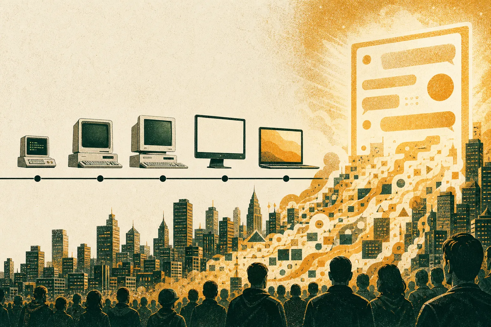

From GPT-3 to ChatGPT: what really changed for marketers

Between the GPT-3 API beta in June 2020 and today, generative AI went from a specialist tool requiring hand-built prompts to a universal writing assistant. What changed most for marketers is access: everyone can now produce fluent copy. What did not change is that distinctive content still depends on clear voice, real audience insight and human judgment.
What was the generative AI landscape in 2020?
In May 2020 OpenAI released the paper "Language Models are Few-Shot Learners", describing GPT-3, a model with 175 billion parameters. In June 2020 it opened access through an API in private beta, with a waitlist. Developers and a small number of writers and marketers began experimenting.
The interface was a text box that continued whatever you wrote. To get a product description, you wrote the start of a document containing example descriptions and left a gap. Outputs could be startlingly good one moment and nonsensical the next. GPT3 Marketing was founded that summer, and our earliest work was mostly learning what the model would and would not do reliably.
What changed between 2020 and 2022?
Models were trained to follow instructions rather than merely continue text. That meant you could say "write three subject lines for this email" instead of building a pattern for the model to complete. The gap between what a non-specialist could achieve and what a specialist could achieve narrowed.
Then, on 30 November 2022, OpenAI released ChatGPT. The conversational interface removed nearly every barrier. Within weeks, generative AI was something marketing teams used rather than something they read about.
What changed after ChatGPT?
- Volume exploded. Teams could produce many more variations, posts and drafts.
- Quality floors rose. Grammatical, structured copy became the minimum.
- Sameness spread. With everyone using similar models and similar prompts, content converged. We explore this in why AI content all sounds the same.
- Models kept improving. Longer context, multimodal input, better reasoning and stronger tool use followed. Our sister studio GPT5 Marketing works on what reasoning-era models mean for marketing workflows.
- Search changed. AI answers began to sit between brands and buyers, changing how content gets found.
What did not change?
Inputs determine outputs
In 2020 a weak example set produced weak copy. In 2026 a weak brief produces generic copy. The mechanism is the same.
Someone has to own judgment
Models are more reliable, but they still cannot decide what your brand should say, to whom, and when. That remains a human call.
Audiences reward specificity
People respond to content that reflects their situation in their language. No model release changes that. What has changed is the tooling to find that language at scale. SOMIN, an AI audience-research platform and our technology partner, reads real posts to surface tones, emotions and tensions; the SOMIN vision explains why grounding AI in real conversation matters.
Timeline: key dates for marketers
- May 2020: GPT-3 paper published (175B parameters).
- June 2020: GPT-3 API opens in private beta. GPT3 Marketing is founded that summer.
- November 2022: ChatGPT launches; generative AI goes mainstream.
- August 2025: GPT-5 released, with routing between fast and deeper reasoning modes.
What should content teams take from six years of change?
The advantage has moved. In 2020 the edge was being able to use the technology at all. In 2023 it was speed. In 2026, with fluent output universal, the edge is distinctiveness: content that could only have come from you, for an audience you actually understand.
When everyone can write, the scarce thing is having something specific to say.
That is why our work now centres on three systems: a voice system, a prompt library and a human edit loop, all fed with audience evidence. It is also why we see the old craft habits as more valuable, not less. See what few-shot prompting still teaches for the practical side.
Checklist: is your team using AI like it is 2020, 2023 or 2026?
- 2020 mode: experimenting, no shared prompts, everything rewritten.
- 2023 mode: high volume, ad hoc prompts, light edits, rising sameness.
- 2026 mode: codified voice, versioned prompt library, audience-grounded briefs, judgment-led editing, measurement of what lands.
Definitions
- Large language model: a model trained on large text corpora to predict and generate text.
- Instruction tuning: training that teaches a model to follow natural-language requests.
- Context window: the amount of text a model can consider at once.
For further reading on how audience research translates into strategy across categories, browse SOMIN's AI marketing strategy cases, including the Pepsi India case study.
What did the first wave get wrong?
Looking back, the early enthusiasm around generative content made a few mistakes worth naming, because teams are still repeating them.
- Treating volume as the goal. Because more content became cheap, many teams assumed more content was better. Audiences did not agree.
- Skipping the brief. When drafting was effortless, the thinking that used to happen before drafting quietly disappeared.
- Assuming fluency meant accuracy. Confident, polished text still needed checking, and still does.
- Ignoring the audience. Prompts described the brand at length and the customer barely at all.
None of these were model failures. They were process choices, and they can be reversed.
What will the next six years reward?
Nobody can forecast model capabilities with confidence, and we will not try. What seems safe to say is that whatever makes fluent text cheaper will make specific, evidenced, recognisable content relatively more valuable. Teams that invest now in voice, audience understanding and editorial judgment are building assets that survive model changes. Teams that invest only in volume are building on the one thing that keeps getting cheaper for everyone. That is the bet GPT3 Marketing has made since 2020, and six years of change have not given us a reason to revise it.
Frequently asked questions
When was GPT-3 released?
OpenAI published the GPT-3 paper in May 2020 and opened a private beta of the API in June 2020. The model had 175 billion parameters.
When did ChatGPT launch?
OpenAI released ChatGPT as a research preview on 30 November 2022, bringing conversational access to a wide public audience.
What is the biggest change for marketers since 2020?
Access. Fluent text went from a scarce specialist capability to something everyone has, which shifted the competitive advantage from producing content to making it distinctive.
Book a voice audit
We have been writing with language models since the summer the GPT-3 API opened in 2020. We build brand voice systems, prompt libraries and human-edited content operations, grounded in what your real audience responds to.
Email ask@gpt3.marketing →